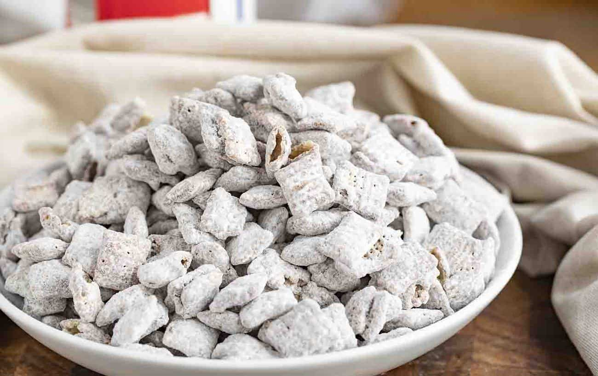
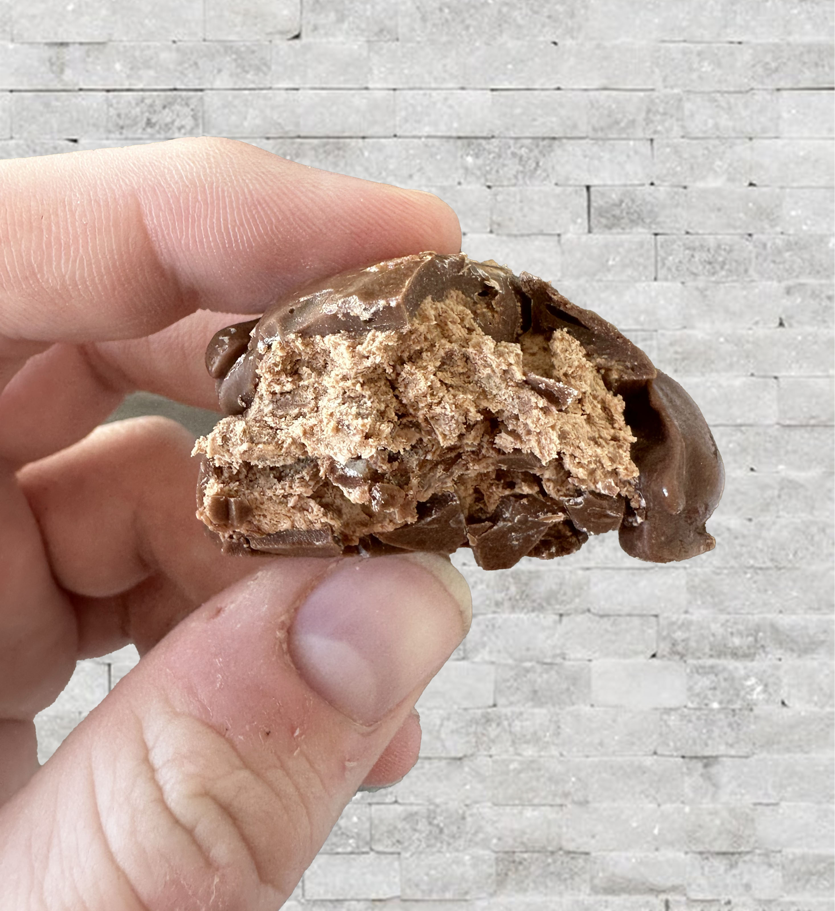
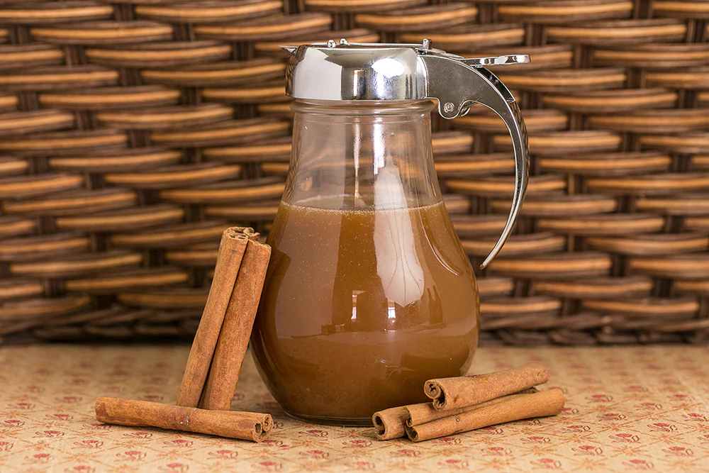

Chex™ Muddy Buddies
Ingredients
- 9 cups Rice Chex
- 1 cup Chocolate Chips
- 1/2 cup Peanut Butter
- 1/4 cup butter or margarine
- 1 tsp vanilla
- 1 1/2 cups Powdered sugar
Directions
- In a microwave-safe bowl, Microwave Chocolate Chips, peanut butter, and butter uncovered on High for 1 minute then stir
- Microwave about 30 more seconds or until mixture can be stirred smooth.
- Stir in vanilla
- Pour mixture over cereal stirring until evenly coated.
- Put in container with lid
- Add powered sugar, and shake until well coated
Cool Whip 3 Musketeers
Used the recipe found on Shugary Sweets
Ingredients
- 2 pkgs (11oz each) Milk Chocolate Chips
- 1 tub (8oz) Cool Whip, thawed
- 24oz Chocolate Melting Wafers
Directions
- In a microwave-safe bowl, melt Chocolate Chips for one minute. Stir and microwave again for another 30 seconds.
Stir until smooth.
(If needed, heat another 15 seconds). Allow to sit and cool to room temperature, about 20 minutes - Line an 8in square baking dish with parchment paper. Set aside
- In a large bow, fold together melted chocolate and Cool Whip. Keep folding until all the chocolate and Cool Whip have been combined. Pour into baking dish.
- Freeze for 30 minutes. Remove from freezer and cut into squares. Place squares on parchment paper lined baking sheet,
put back to freezer for at least 30 minutes. - Melt chocolate wafers following the instructions on package
- Remove from freezer and dip into melted chocolate. Place dipped pieces back on parchment paper. Put back in freezer and let it set up for a half hour.
Yummy Syrup
Ingredients
- 1/2 cup Milk
- 1/2 tsp Vinegar
- 1 cup Sugar
- 1 cube Butter
- 1 tsp Vanilla
- 1 tsp Cinnamon
- 1 tsp Baking Soda
Directions
- Bring the milk, vinegar, sugar, and butter to a boil.
- Let it boil for 2 minutes.
- Take the mixture off heat and add vanilla, cinnamon, and baking soda.